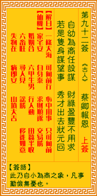

观音灵签第九十二签 【蔡卿报恩】 |
 | |||
经商得利称心怀 福禄荣华倍获财 若问进身谋望事 秀才一举状元回 |
||||
| 【吉凶】 | 上上签 | 【宫位】 | 酉宫 | |
| 【签语】 | 此卦自小为商之象，凡事勤俭无忧也。 | |||
| 【解曰】 | 自小至大 无阻无碍 营谋得意 功名顺遂 | |||
| 【仙机】 | 此签家宅安，自身泰，求财顺遂，交易胜，婚姻合，六甲生男，行人动，田蚕半收，六畜旺，寻人见，讼胜，移徙如意，失物在，病即安 ，山坟大吉。 | |||
| 【详解】 | 从商获利时自然称心开怀，更何况荣华富贵倍增;如果要问求谋加官等事，终能一举状元，衣锦还乡。 自小至大，无相无碍，诸事遂吉，谋望自在。此签进身大吉之象，凡事操心大吉。 本签者。进身大吉之象也。凡百事兴时操心大利。灵诗示之云。经商得利称心怀。福禄面也。荣华倍获财。君汝如问谋望之面。神可告之君。必能一举状元衣锦还 乡者。易言之。汝自幼小之年。自小至大无相无碍诸事遂意。遂望自在耶。 此签有”择善固执”之意。提醒当事人，凡事相信。人们最大的痛苦，莫过于对人性产生了怀疑。因为凡事疑神疑鬼，自我的内心开始筑起了高墙，担心被骗、被 利用而受伤。但是，处处防着别人，凡事都过度小心、过度猜测的结果，不但于事无补，反而只会让自己越来越神经质;而你回应给别人的不信任感，别人同样也 会回报在你身上。与其因为怀疑而产生更大的痛苦，还不如凡事包容、凡事相信。事情没有那么复杂，是人的心使它复杂。保持一颗赤子之心，相信人性本善，以 真诚待人，包容厚道，人生何处不逍遥。 | |||
| 【典故】 | 蔡邕新婚不久，即辞别妻子赵五娘，上京考试，五娘辛勤持家，落难受苦，日子非常难过，幸得善人张广才救济。后来蔡邕考中状元，做 了大官，又和牛丞相女儿牛小姐结婚，五娘历尽千辛万苦，上京会见了蔡邕，夫妻重逢，和牛小姐一同回乡扫墓，蔡邕赠送许多金钱给张广才，以报答其恩德。‘卿’是古时皇帝 封大臣的爱称。明代《琵琶记》传奇故事 | |||